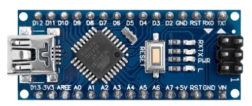
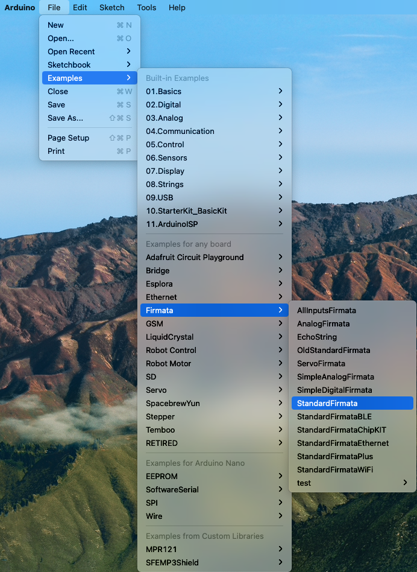
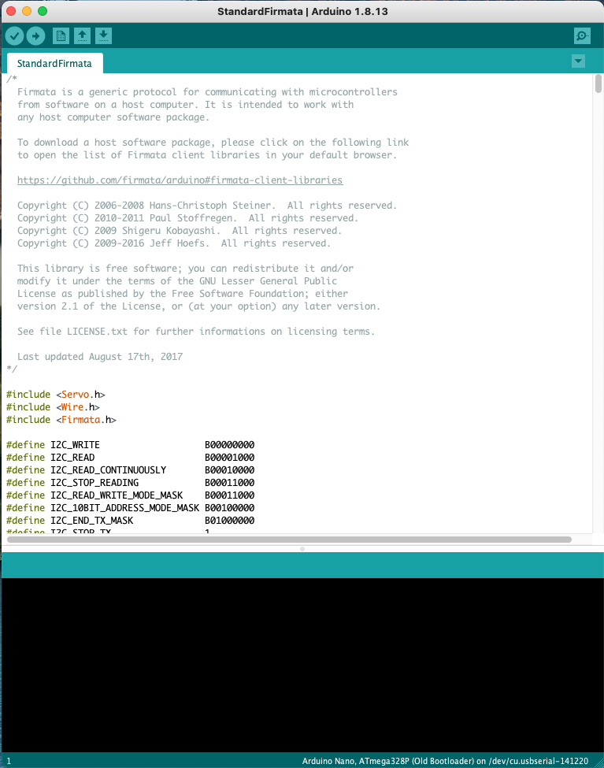
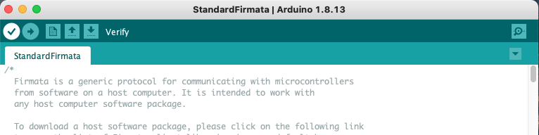
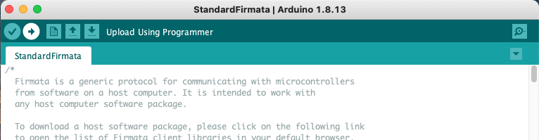
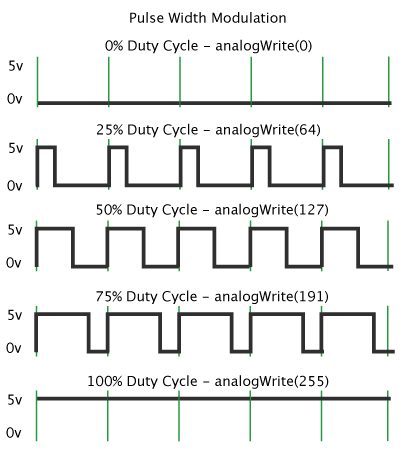

This page was generated from notebooks/L15/1_python_hardware.ipynb.


Python and Hardware#
In the last lecture, we would like to interface our Python notebook to the real world. We would like to control a small computer, which can measure and control things in the real world, like experiments. We show you how to setup and Arduino nano board and use that to output and input signals. To use this Notebook, you will need an Arduino board. It will do nothing than creating errors if you just use it in the mybinder service. You can find out more about Arduino on their website.
[92]:
from __future__ import print_function
import numpy as np
import time
import matplotlib.pyplot as plt
%matplotlib inline
from ipycanvas import MultiCanvas, hold_canvas,Canvas
from ipywidgets import interact, interactive, fixed, interact_manual
import ipywidgets as widgets
%config InlineBackend.figure_format = 'retina'
plt.rcParams.update({'font.size': 18,
'axes.titlesize': 20,
'axes.labelsize': 20,
'axes.labelpad': 1,
'lines.linewidth': 2,
'lines.markersize': 10,
'xtick.labelsize' : 18,
'ytick.labelsize' : 18,
'xtick.top' : True,
'xtick.direction' : 'in',
'ytick.right' : True,
'ytick.direction' : 'in'
})
Arduino Nano Board#
There are several diffrent Arduino boards available. The one I’m going to use is the Arduino nano, which looks like this
It has an USB connector here on the left and a number of analog (A0-A7) and digital (D2-D13) input and outputs. All of these connectors can be used as inputs and outputs.
Arduino Software#
The Arduino boards are typically programmed with a programming language, which is a bit like C. The programs are written on your computer, compiled and the uploaded to the Arduino. It then runs your program independently. The software interface to write and compile such programs for a number of different boards is available at the Arduino Website. We will need it actually only once. So go ahead and install the software on you computer.
Setup your board#
To communicate in Python with your Arduino you need to prepare your board with a program, that is provided for free with the Arduino programming environment. By the way, the programs for the Arduinos are called Sketch, because they are more like a sketch. The sketch that allows the interaction of the Arduino with Python is called Firmata.
Before we upload the Firmata sketch to the Arduino, we need to setup the connection of your computer to the Arduino. To do so, you need to connect your Arduino via USB to your computer and then setup the connection in the Tools menu of your Arduino software. On my MacBook, this looks like that
You see that the select board is “Arduino Nano” and the USB port is /dev/cu.usbserial-141220. I selected the processor which works with my board. That could be sometimes a bit tedious. When you further click on the Serial Monitor menu above, a window will open, where you can select the speed of your seriaal connection with the board, which you should adjust to 57600 baud.
Select Firmata Sketch#
Next you have to select the firmata sketch. That is available from the examples menu, which should look like below
Select the StandardFirmata sketch.
A window should open which displays the code of the sketch.
After that, you can compile the Sketch with the top left button
And finally you may upload the Sketch to your arduino with the button on the right of the compile button.
Communicating with the board#
The module, that allows us to communicate with the Arduino board and the Firmata sketch is the pyfirmata module. You can install the module on your computer by executing
!pip install pyfirmata
in one of the Jupyter notebook cells. After you have done so, you may import the module functionality by
[40]:
import pyfirmata
The module allows you to connect to the board in a very easy way. You just have to provide the corresponding USB connection details. For Windows, this will be some of the COM ports. For Linux and also osX, it wil be one of the devices listed in the /dev directory. For my MacBook I just type
ls /dev/*usb*
into one of the Jupyter notebooks cells.
[42]:
ls /dev/*usb*
/dev/cu.usbserial-141220 /dev/tty.usbserial-141220
Using that USB connection port we may simply assign a new board instance by
[84]:
board = pyfirmata.Arduino('/dev/cu.usbserial-141220')
Let the on-board LED blink#
The onboard LED of the Arduino nano is connected to the digital port D13. So if we output something to D13 we get out board LED (the one with the L) blinking.
[52]:
i=0
while i<100:
board.digital[13].write(1)
time.sleep(0.1)
board.digital[13].write(0)
time.sleep(0.1)
i+=1

We can also measure the output voltage at the corresponding pin D13. Whenever the LED is on, we measrue a voltage of about 4.7 V, which corresponds to the TTL HIGH level, while the voltage of about 0.9 V represents the LOW level.
[ ]:
i=0
while i<100:
board.digital[13].write(1)
time.sleep(2)
board.digital[13].write(0)
time.sleep(2)
i+=1
The values are visible in the video below.

Tunable output#
You may also output some voltages with the Arduino nano. Yet the signal output here works with a so called pulse width modulation (PWM). The pulse width modulation switches a digital port quickly between the HIGH and the LOW values. By varying the time the output is HIGH as compared to LOW, the average voltage is set to a value between 0 V and 5 V. This fast switching is done with a freqeuncy of 500 Hz.
[100]:
board = pyfirmata.Arduino('/dev/cu.usbserial-141220')
We can use the PWM mode by setting one of the digital outputs accordingly. The get_pin command below, allows you to configure one of the outputs. The string ‘d:3:p’ configure output D3 to PWM mode. You may also configure the as input ‘d:3:i’ or output ‘d:3:o’.
[101]:
outPWM = board.get_pin('d:3:p')
The rest is very simple. We can actually use the ipywidgets module to create a slider, which allows us to modulate the output voltage.
[102]:
def output(x):
outPWM.write(x)
[103]:
def f(x):
return x
[104]:
interact(output, x=(0.0,1.0,0.01));
Here is the movie of what I tried with the slider.

Creating an Oscilloscope#
One of the cool things among many other things you can do with the analog and digital ports of an arduino is to create yout own simple oscilloscope. Its not really as versatile as a more expensive one, but at leat you are able to follow a voltage signal over time easily. The voltage range is limited to 0-5 V without additional electronics, but this may be already enout to couple some sensors.
To allow for continuous reporting of the voltage a certain board analog input, we use board.analog[0].enable_reporting(). This will switch on the reporting of the analog voltage at port A0.
[106]:
board.analog[0].enable_reporting()
The command read, will then read a single value from the input.
[111]:
print(board.analog[0].read())
0.3021
The reporting will start reporting the analog values continuously without any control. We may, however, use the pyfirmata.util.Iterator(board) method to take control over the reading. We get then a new value, whenever a value is read. The iterator is started with it.start().
[112]:
it = pyfirmata.util.Iterator(board)
it.start()
board.analog[0].enable_reporting()
Since we want to have an oscilloscope, we need to plot the data somewhere. We can use out beloved ipycanvas module for that purpose.
[129]:
## setup the canvas
canvas = Canvas(width=800, height=300,sync_image_data=False)
canvas.font = '20px serif'
display(canvas)
The rest is just easy for us. We create a buffer data where we store the voltage value for each x point in the canvas (here 800 px). If we have read 800 values, we will shift the data in the array to the left such that we can insert the new point as the rightmost entry. In addition, I have inserted some autoscaling of the data and a display of the minimum and maximum voltage of the current signal trace. There is much room for improvement.
[131]:
data=np.zeros(canvas.width)
i=0
while True:
analog_value = board.analog[0].read()
if i<799:
data[i]=analog_value
i+=1
else:
data[:-2]=data[1:-1]
data[-2]=analog_value
time.sleep(0.05)
with hold_canvas(canvas):
canvas.clear()
canvas.line_width = 1
canvas.begin_path()
min=data[1:-2].min()
max=data[1:-2].max()
canvas.fill_text(str(max)+' V', 10, 20)
canvas.fill_text(str(min)+' V', 10, canvas.height-20)
for j in range(i-1):
canvas.move_to(j,canvas.height-(data[j]-min)*canvas.height/(max-min))
canvas.line_to(j+1,canvas.height-(data[j+1]-min)*canvas.height/(max-min))
canvas.stroke()
---------------------------------------------------------------------------
KeyboardInterrupt Traceback (most recent call last)
<ipython-input-131-f7bc658ca79a> in <module>
22 for j in range(i-1):
23 canvas.move_to(j,canvas.height-(data[j]-min)*canvas.height/(max-min))
---> 24 canvas.line_to(j+1,canvas.height-(data[j+1]-min)*canvas.height/(max-min))
25 canvas.stroke()
26
KeyboardInterrupt: